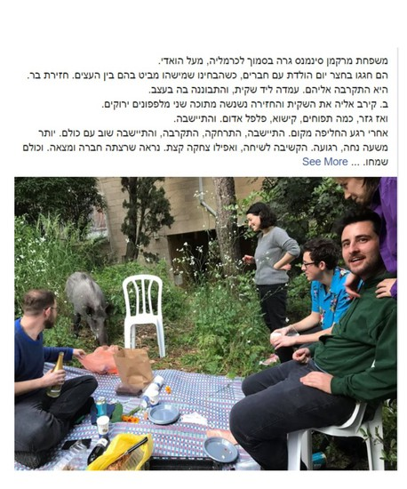
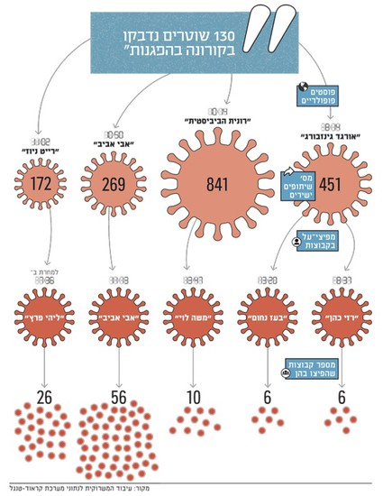

פייק ניוז (Fake News)
חדשות כזב בעידן הדיגיטלי
מושגי מפתח (לחצו לפירוש)
מה זה?
שקר המופיע כחדשות
פייק ניוז: ידיעות כוזבות שמוצגות כאילו הן אמיתיות במטרה להונות את הציבור למטרות פוליטיות, מסחריות (או אחרות, הומור למשל).
**למה זה פורח עכשיו?** בתרבות דיגיטלית, התקשורת המרכזית היא רשתות חברתיות, שמציפות אותנו במידע. קשה מאוד להגיע למקור המידע ולבדוק את אמיתותו.
מקרה מבחן
גלגולו של פייק ניוז (דוגמה)
איך הפך מידע לא ברור על שוטרים שחלו, לטענה שקרית וחד-משמעית שהם נדבקו בהפגנות?
פייק ניוז: כך נולד הספין (זמן ישראל)
הבדיקה של "המשרוקית" (גלובס)
**התהליך:** רמיזה עם קריצה -> הפצה על ידי בעלי עניין -> שיתוף המוני -> הופך ל"אמת" ויראלית.
הפצה ויראלית
למה זה מתפשט כל כך מהר?
- **ויראליות:** יכולת להפיץ המון מידע, להמון אנשים, בזמן קצר, ללא שליטה.
- **חוסר סינון:** לאנשים פרטיים אין כלים עיתונאיים או מחויבות לאמת.
- **אלגוריתמים:** מעדיפים תוכן שקרי ומעורר רגש (כי זה מביא מעורבות וכסף).
- **פלטפורמות:** הרשתות החברתיות טוענות שהן רק "צינור" ולא אחראיות לתוכן.
דוגמה ויזואלית
חזירים בחיפה?
ידיעת פייק ניוז שפורסמה ברשתות כבדיחה, הפכה לפוסט ויראלי שנתפש על ידי רבים כתצלום אמיתי.

סיכום ודיון
ההשלכות והסכנות
משבר אמון: אזרחים לא מאמינים לשום דבר, גם לאמת.
פוסט אמת: מצב בו אין הסכמה על עובדות בסיסיות, וקשה לנהל דיון ציבורי.
דילמה לדיון: הגיע אלי סרטון מרתק. לשתף מיד (ולהסתכן בהפצת פייק) או לבדוק קודם (ולהסתכן בלא להיות "הראשון")?